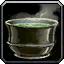

Culkas
fortifiant (décoction) - 50 po
↪ racines - montagne - printemps, automne
↪ racines - montagne - printemps, automne
Les racines de culkas, un type de ronces d'apparence anodine, ont la particularité de fermer les pavillons internes des oreilles pour les races humanoïdes. La décoction qu'on en tire est généralement vendue sous forme de crème. L'appliquer dans ses oreilles diminue l'ouïe d'environ 50 %, ce qui permet tout de même d'écouter quelqu'un parler en face de soi, mais surtout cela empêche d'être assourdi et ce, quel que soit le volume sonore agresseur, les pavillons se fermant complètement en cas de volume excessif.
Une créature qui s'enduit l'intérieur des oreilles de crème de culkas gagne un avantage à tous ses jets de sauvegarde pour ne pas être assourdi durant 1 minute. Appliquer plusieurs doses dans ses oreilles cumule la durée sans toutefois réduire l'ouïe de plus de 50 %.
Une créature qui s'enduit l'intérieur des oreilles de crème de culkas gagne un avantage à tous ses jets de sauvegarde pour ne pas être assourdi durant 1 minute. Appliquer plusieurs doses dans ses oreilles cumule la durée sans toutefois réduire l'ouïe de plus de 50 %.
Recueil des plantes d´AideDD